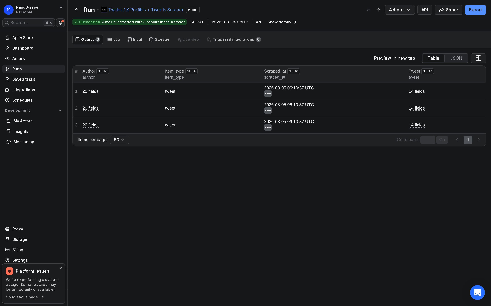
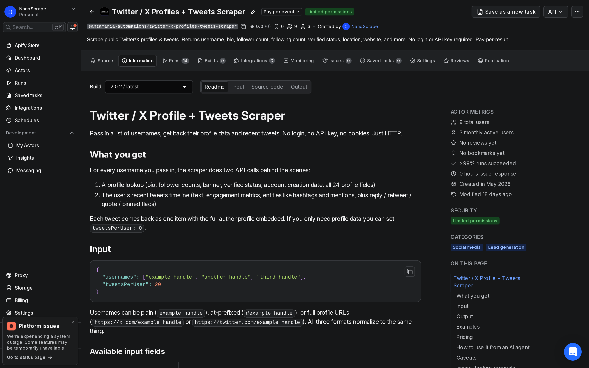
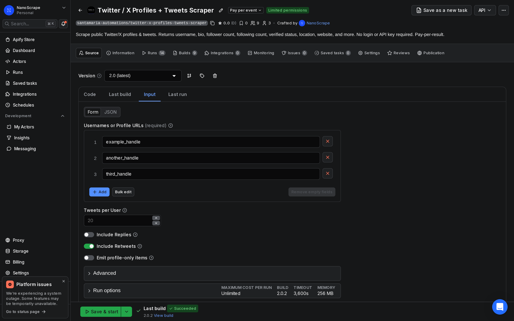
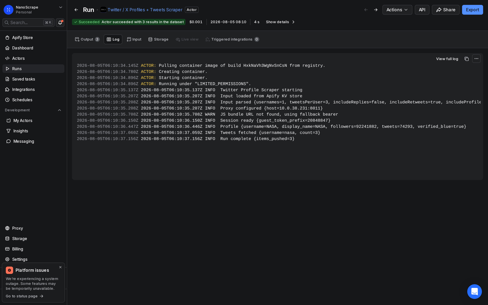

How to Scrape Twitter / X Profiles and Tweets Without the API
The X API's Basic tier starts at $100 per month and caps you at 10,000 tweet reads. This tutorial shows a cheaper path: a pay-per-result scraper on Apify that returns full profile data (bio, followers, verified status) and recent tweets (text, engagement metrics, entities) for any list of public accounts. No API key, no OAuth app, no monthly commitment. One user's 20 most recent tweets costs about two cents.

In this tutorial
What you get
The NanoScrape Twitter / X Profiles + Tweets Scraper runs on Apify and accepts a list of usernames. For each account it fetches the full profile block (24 fields) and that user's recent tweet timeline. Each tweet is returned as a separate dataset row with the author profile embedded alongside it. No login, no API key, and no cookies required.
- Profile data: username, display name, bio, location, website, follower count, following count, tweet count, verified status, blue verified badge, profile image URL, banner URL, account creation date, and more.
- Tweet text: full tweet text without truncation, plus the tweet's URL, creation timestamp, and source app.
- Engagement metrics: like count, retweet count, reply count, quote count, bookmark count, and view count.
- Entities: hashtags, mentions (with stable user IDs), expanded URLs (resolves t.co shortener), cashtags, and attached media URLs.
- Tweet flags: is_reply, is_retweet, is_quote, is_pinned, and the referenced tweet IDs for each.
If you only need profile metadata and not tweets, set tweetsPerUser to 0 and enable includeProfileOnlyItems. Each user then returns a single profile row instead of one row per tweet.
Prerequisites
- A free Apify account (no credit card required to sign up, $5 free credit on activation)
- One or more public Twitter / X usernames you want to scrape
Step 1: Create a free Apify account
- Go to console.apify.com/sign-up and create an account. Email, Google, and GitHub sign-in are all available.
- After activating your account, Apify credits $5 to your balance. This covers hundreds of user scrapes before any payment is needed.
- You do not need to enter a credit card to begin.
Step 2: Open the Twitter / X Scraper
Click the button below (or paste the URL directly into your browser). It opens the actor's page in Apify Console. Make sure you are signed in first.

Step 3: Configure usernames and tweet settings
The only required field is usernames. All other fields have sensible defaults. A basic run for three accounts looks like this:
{
"usernames": ["nasa", "spacex", "esa"],
"tweetsPerUser": 20
}Username formats are flexible. The actor normalises all three of these to the same account:
{
"usernames": [
"nasa",
"@nasa",
"https://x.com/NASA"
]
}Key input fields:
usernames(required): usernames, @handles, or full profile URLs. One actor run can process many accounts.tweetsPerUser(integer, default 20, range 0 to 1000): how many recent tweets to return per account. Set to0to skip tweets and fetch only profile data.includeReplies(boolean, default false): include tweets that are replies to other accounts.includeRetweets(boolean, default true): include retweets in the timeline.includeProfileOnlyItems(boolean, default false): when enabled, adds one extra profile row per user in addition to the tweet rows.maxIPRotations(integer, default 5): how many times the actor retries with a fresh proxy session if X rate-limits the current IP.

{"tweetsPerUser": 0, "includeProfileOnlyItems": true}. Each account returns one compact profile row. Useful for building contact lists or enriching a CRM.Step 4: Run the actor
Click Save and Run at the bottom of the input form. Apify starts the actor container, logs into X using a fresh guest session, and begins fetching profiles and tweets. For a small run of 3 accounts with 20 tweets each, the job finishes in under 30 seconds.

If a run shows FAILED, the most common causes are:
- Protected account: the target account has locked tweets. The actor returns the profile row only and skips tweets for that user.
- Suspended or deleted account: the actor skips these silently. Check for typos in your username list.
- Credit balance at zero: top up in Apify Console billing.
Step 5: Export your results
When the run finishes, click the Dataset tab or Export results button. Apify stores the full output until you delete it. Available export formats:
- JSON: the complete nested structure including all tweet and author fields. Best for pipelines and further processing.
- CSV: flattened rows with dot-notation column names for nested fields. Works directly in Excel and Google Sheets.
- Excel (XLSX): identical to CSV but formatted as an Excel workbook.
- XML / HTML / RSS: available for integrations that require those formats.
For large exports you can also query the dataset via the Apify Datasets API. This lets you paginate through millions of rows or filter by field without downloading the entire file.
Common use cases
- Competitor monitoring: pull the last 50 tweets from a set of competitor accounts weekly to track announcements, campaigns, and community engagement.
- Lead generation: scrape profiles of accounts in a niche to build a list of contacts with bio, website, and follower count. Combine with
tweetsPerUser: 0to minimise cost. - Research datasets: collect tweets from a list of accounts for academic or business research, filtering out retweets and replies with
includeRetweets: falseandincludeReplies: false. - Social listening: monitor what a set of influencers or brand accounts are posting by scheduling a daily run and feeding results into a spreadsheet or database.
- Sentiment analysis pipeline: feed tweet text into an LLM or sentiment model for brand monitoring. See the related Tweet analysis tutorial for one way to do this.
Field reference
Tweet fields (tweet.*)
id: tweet ID (stable, use this for deduplication)text: full tweet text, never truncatedlang: ISO 639-1 language codecreated_at/created_at_unix: ISO 8601 timestamp and Unix secondsurl: direct link to the tweetengagement.like_count,retweet_count,reply_count,quote_count,bookmark_count,view_countentities.hashtags,mentions,urls(withexpanded_urlresolving t.co),mediais_reply,is_retweet,is_quote,is_pinned
Author profile fields (author.*)
id: stable numeric account ID (does not change if the user renames their handle)username,display_namebio,location,website,website_expanded(resolved URL)followers_count,following_count,tweet_count,listed_countverified(legacy blue tick),blue_verified(X Premium subscriber)profile_image_url,profile_banner_urlcreated_at: account creation date
engagement.view_count is 0 on very recent tweets. X populates view counts with a short delay after a tweet is published.Schedule recurring runs
To monitor accounts on a regular cadence, open the Schedules section in Apify Console and create a new schedule pointing to this actor. Set the frequency (daily, weekly, or any cron expression) and the saved input JSON. Apify runs the actor automatically and stores each run's dataset separately.
For downstream automation, connect the actor's webhook to a Zapier or Make scenario so a new row lands in Google Sheets every time a run finishes. Apify fires the webhook once the run reaches SUCCEEDED status.
tweetsPerUser: 5 for daily scheduled runs so you only collect the most recent activity. Scale tweetsPerUser up for initial historical backfills.What it costs
- Actor start: $0.010 one-time per run (covers session bootstrap and the first profile lookup)
- Each item delivered: $0.0003 per tweet or profile row
Quick estimates:
- 1 user, 20 tweets: $0.01 + (20 x $0.0003) = $0.016
- 10 users, 20 tweets each: $0.01 + (200 x $0.0003) = $0.07
- 100 users, 20 tweets each: $0.01 + (2,000 x $0.0003) = $0.61
- 1,000 tweet rows: $0.01 + (1,000 x $0.0003) = $0.31
The $5 free credit Apify gives on signup covers roughly 300 users at 20 tweets each before any payment is needed. By comparison, the X API Basic tier starts at $100 per month for 10,000 tweet reads. For intermittent or batch workloads, the pay-per-result model is significantly cheaper.
FAQ
Do I need a Twitter / X API key to use this scraper?
No. The scraper does not use the X API at all. It sends the same requests a logged-out browser would make to x.com, so no API key, OAuth app, or developer account is needed.
Can I scrape protected or private accounts?
Protected accounts (locked tweets) return profile metadata only. The actor cannot fetch tweets from accounts that require a follow request. Suspended and deleted accounts are skipped silently.
What is the difference between a tweet item and a profile item?
The default output is one item per tweet, with the author profile embedded in the `author` field of each row. If you set `includeProfileOnlyItems: true`, the actor also pushes one additional item per user where `item_type` is `profile` and the `tweet` field is absent. This is useful when you want a deduplicated list of profiles alongside the tweet rows.
How many tweets can I scrape per user?
The `tweetsPerUser` field accepts any integer from 0 to 1,000. For historical backfills beyond 1,000 tweets, run multiple jobs with different date ranges or use the actor in batches.
Will the actor get rate-limited by X?
X rate-limits requests from datacenter IP ranges aggressively. The actor uses residential proxies by default and retries with a fresh session up to `maxIPRotations` times (default 5) if it hits a rate limit. For large runs, increasing `maxIPRotations` can reduce failures.
Can I filter out retweets and replies?
Yes. Set `includeRetweets: false` to drop retweets from the output and `includeReplies: false` to drop replies. Both default to the values that return the broadest timeline, so you can tighten the filter to original tweets only.
How long does a run take?
A small run of 3 accounts at 20 tweets each typically finishes in under 30 seconds. Larger runs scale roughly linearly: 100 accounts at 20 tweets each takes 2 to 4 minutes depending on X response times and proxy routing.
Can I use this actor from an AI agent or automation tool?
Yes. The actor is available via Apify's MCP endpoint, which works with Claude Desktop, Claude.ai, Cursor, VS Code, LangChain, n8n, and any other MCP client. You can also call it from Zapier or Make using Apify's built-in integrations.
Related resources
- Twitter / X Profiles + Tweets Scraper actor page: Full specs, pricing tiers, and comparison with alternatives.
- Tweet analysis tutorial: How to run sentiment analysis and topic extraction on the tweets you collect with this scraper.
- Instagram Scraper tutorial: Scrape Instagram profiles, posts, and follower counts in the same pay-per-result pattern.
- Twitter / X Profiles + Tweets Scraper on Apify: Full actor documentation, all input parameters, and the complete field reference.
- All NanoScrape tutorials: Step-by-step guides for scraping Google Maps, Reddit, YouTube, and more.